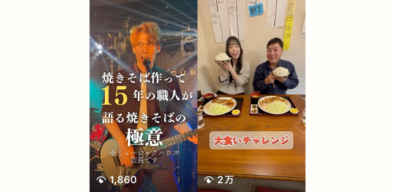

制作概要
- 担当内容
- リール動画制作
- 制作期間
- 各5〜7時間程度
- 使用ツール
- CapCut
目的
THE FLEA MARKETS様の認知拡大と、アカウントへの興味・フォローにつなげることを目的に制作しました。
普段のメンバーの様子や会話、自然なリアクションを見せることで、メンバーの人柄やバンドの雰囲気を身近に感じてもらうことを意識しました。
ターゲット
- 30〜50代の男性
- 苫小牧に住んでいる方
- ライブハウスやフェスに行くなど、バンド・音楽が好きな方
- 苫小牧や地域の情報に興味がある方
工夫した点
今回、2種類の動画を制作し、それぞれの素材が持つ「面白さ」や「魅力」が伝わるように編集方法を変えました。「焼きそばの極意」では、約30分の素材を2分以内にまとめながら、メンバーが焼きそばについて熱く語る雰囲気を残すことを意識しました。同じ内容や似た発言が続く部分はカットし、テンポよく見られる構成にしています。また、話しているメンバーごとにテロップの色を変えることで、誰が話しているのかを直感的に把握できるようにしました。こちらは先方からもお褒めの言葉をいただきました。
「大食いチャレンジ」では、最初は余裕を見せながら食べ進めていたものの、後半になるにつれて苦しくなり、最終的にギブアップするという流れが動画の面白さだと考えました。そのため、食べ始めの勢いと終盤の変化が伝わるよう、表情やリアクションを意識してカットを選びました。
さらに、自然な笑い声やリアクションをあえて残し、メンバー同士の楽しそうな雰囲気が伝わるようにしています。
苦労した点
どちらの動画も素材の量が多く、大量の映像から「残すべき場面」を見つける取捨選択に時間がかかりました。
「焼きそばの極意」は約30分の素材を2分以内にまとめる必要があり、内容を削りすぎるとメンバーの熱量が失われてしまうため、面白さや勢いを残しながら、重複する発言を整理するバランスに苦労しました。
一方、「大食いチャレンジ」は2時間を超える素材だったため、最初から最後まで確認しながら、使えそうな場面をメモして整理しました。特に、動画の中で何が一番面白いのかを考えながら見ることで、食べ始めから終盤にかけての変化を軸に構成することができました。
一度の選別だけでは絞りきれなかったため、複数回見直しながら不要な場面を削り、最終的に見やすい長さにまとめました。
課題・改善
素材をすべて確認してから構成を考えるのではなく、映像を確認しながら大まかな構成や見せ場を同時に整理することで、素材確認から編集までの時間を短縮することが今後の課題です。
また、テロップのデザインや配置については、内容を伝えることに集中するあまり、見せ方に納得できない部分が残ることがあります。今後はさまざまな動画を制作しながら、情報の優先順位に合わせた文字サイズ・配置・デザインを身につけ、見やすさと動画の雰囲気を両立できる編集を目指したいです。
制作中は集中力を維持することも意識し、作業の区切りで適度に休憩を取りながら、集中とリフレッシュを切り替えることで、長時間の素材にも効率よく取り組めるよう改善していきたいです。